Chieko Asakawa
(visual impairment) was born in Japan and became blind as a teenager. She has developed and continues to develop numerous technologies to assist people who are blind and visually impaired in using computers and accessing the internet. Her innovations in web accessibility, digital braille, and voice browsers are frequently used today. She currently works at IBM and is a professor at Carnegie Mellon University with research in the field of navigation for people with visual disabilities using artificial intelligence.
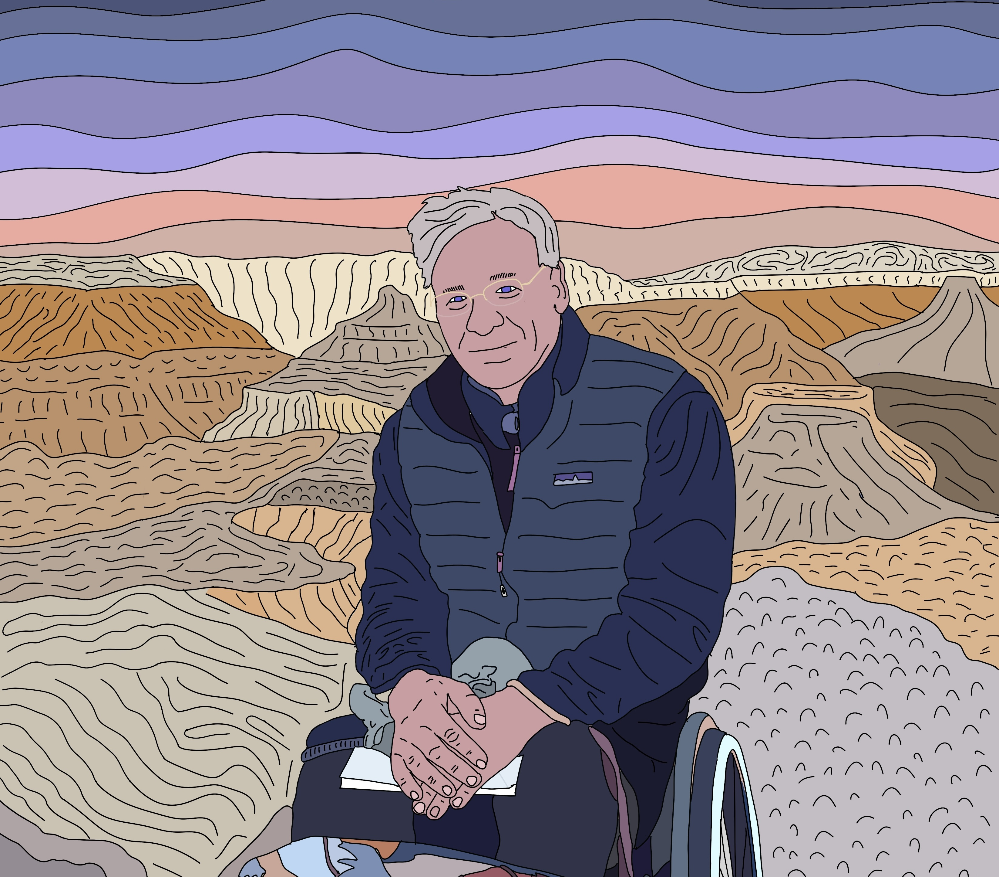
Peter Axelson
(spinal cord injury) was born in Texas and sustained a spinal cord injury while training at the U.S. Air Force Academy. He is the founder of Beneficial Designs, Inc., and the inventor of the Arroyo Sit Ski. He has conducted research and development in various fields related to mobility, specifically with significant contributions to adaptive winter sports and accessibility of trails and sidewalks. He has many years of service on the Paralyzed Veterans of America Research Foundation board and is a leader in the development of technical standards.
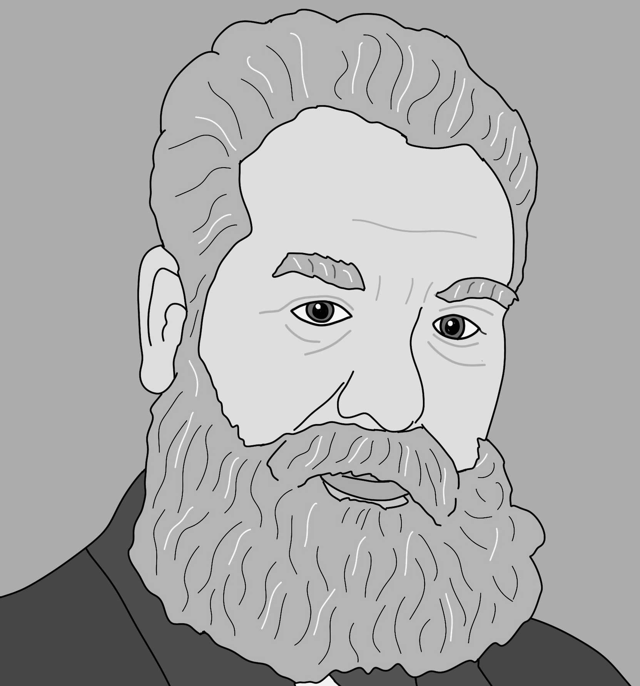
Alexander Graham Bell
(Learning disability – most likely dyslexia)
(1847-1922)
Alexander Graham Bell, best known for inventing the telephone, was a brilliant inventor and educator who lived and worked in Boston, Massachusetts, for much of his life. His curiosity and creativity led him to make advancements in various fields, from communication to aviation. He founded the first telephone company, and his groundbreaking work revolutionized how people connect. Bell was also passionate about helping people with hearing impairments, spending much of his life working on methods to improve communication for the deaf community. His legacy of innovation continues to impact the world today.
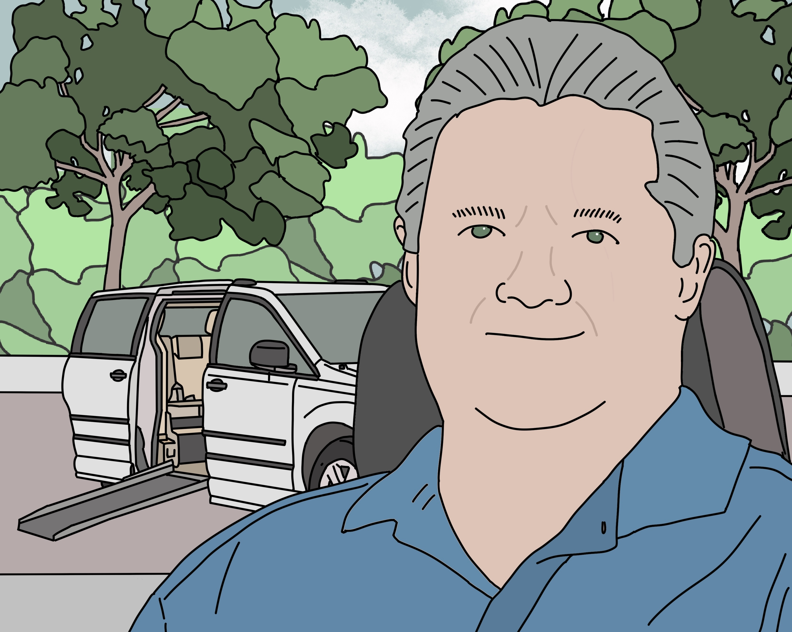
Ralph Braun
(muscular dystrophy) (1940-2013) was born and raised in Indiana. Once his muscular dystrophy progressed to his needing to use a wheelchair for mobility, he created a powered scooter for himself and later retrofitted a jeep that he could drive his scooter into and then operate the jeep. The company he later started to adapt vehicles for wheelchair users remains one of the largest adaptive vehicle modification companies in the United States.
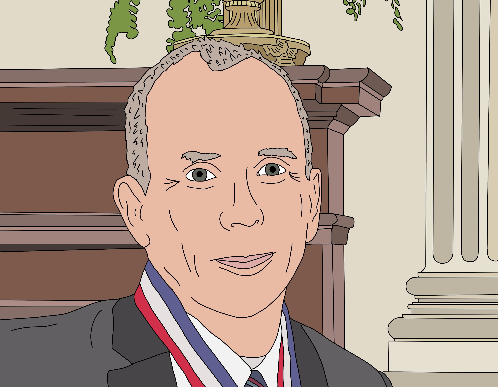
Rory Cooper
(spinal cord injury), injured while serving in the U.S. Army, has transformed the design of mobility devices and currently leads a research center at the VA and University of Pittsburgh. His innovations, such as user interfaces for powered wheelchairs, have impacted nearly every modern wheelchair. He is a strong advocate for accessible STEM, has launched several startups, and serves on federal advisory boards. Recently, his team expanded their work into other medical inventions as well.
Brad Duerstock
(spinal cord injury) is from Indiana and is currently an associate professor of engineering practice and the director of the Institute of Accessible Science at Purdue University. His research focuses on integrating engineering strategies and technologies to improve the human condition and improve human-technology interactions. He has made significant contributions to making STEM more accessible for people with disabilities.
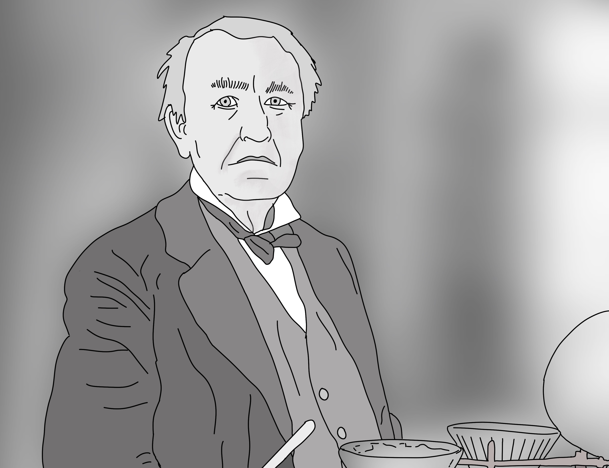
Thomas Alva Edison
(hearing impairment and potentially dyslexia and/or attention deficit/hyperactivity disorder) (1847-1931) is one of the most prolific and well-known inventors in history. He was born in Ohio and led laboratories in Florida and New Jersey. His impact on society is impossible to quantify, as the derivatives of his inventions, including the practical electric light bulb, are used in nearly every household and business every day.
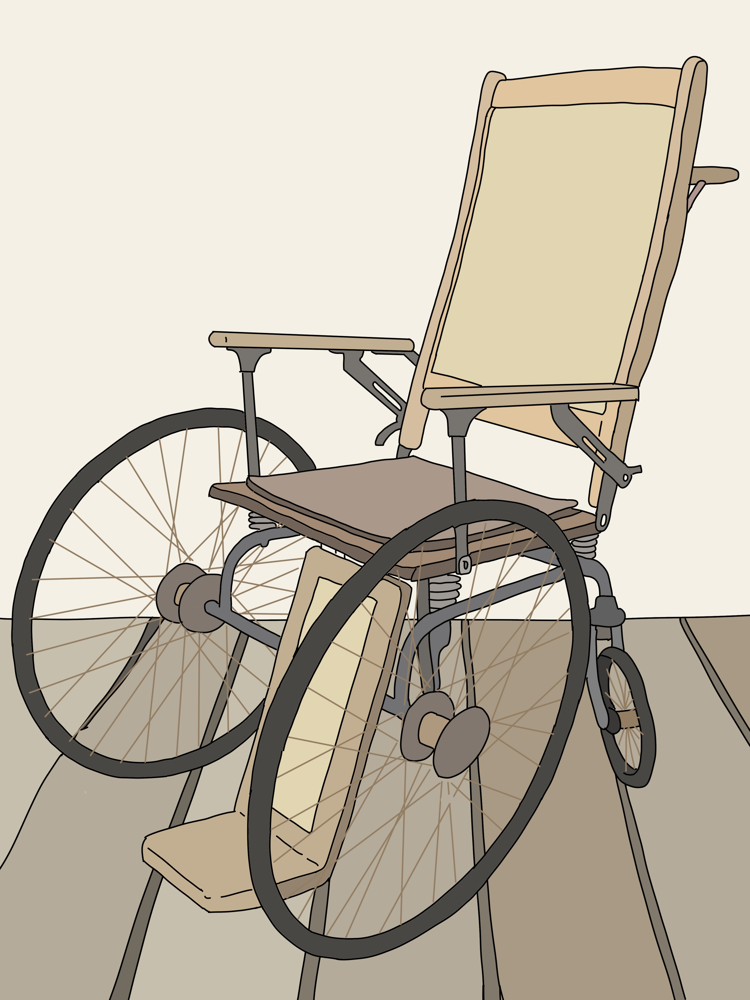
Herbert Everest
(spinal injury) (1885-1959) was a mining engineer who had a spinal injury after an accident in a mine in 1918. In the 1930s, he and a friend, Harry Jennings, started designing a lightweight and foldable wheelchair that would fit in an automobile, which was patented in 1936. They formed the company Everest and Jennings, which became the largest wheelchair manufacturer in the world through the mid to late 1900s.
Stacy Zoern Goad
(spinal muscle atrophy) was born in Texas and received a law degree from the University of Texas and went on to practice patent law for several years. She founded Kenguru, Inc., to produce a fully electric car that people can drive from their wheelchairs.
Temple Grandin
(autism) is originally from Massachusetts and is a professor of animal science at Colorado State University and is a frequent speaker and innovator in the fields of animal science equipment design, animal behavior, and animal welfare auditing.
Michael Graves
(spinal cord infection) (1934-2015) was born in Indiana and was an architect and designer during his professional career. After a spinal cord infection in 2003, which led to paralysis, he focused on designing assistive technologies and home modifications for PwD. He is most known for his line of affordable designer products for the kitchen and home. He was appointed by President Barack Obama to serve on the Architectural and Transportation Barriers Compliance Board (Access Board).
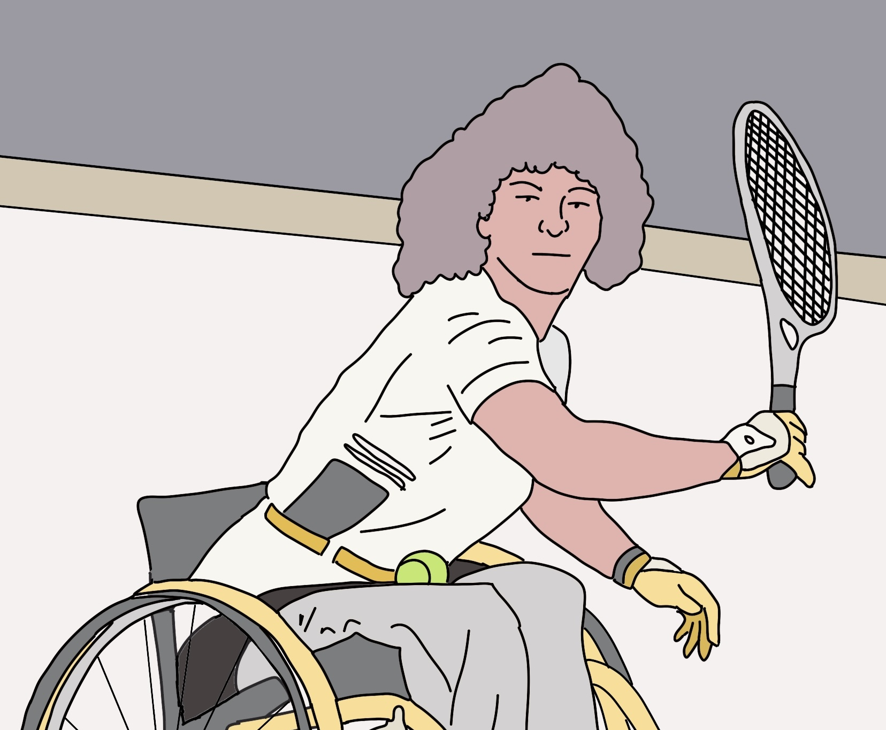
Marilyn Hamilton
(spinal cord injury) was born in California and was injured in a hang-gliding accident and used the principles and materials used in hang-gliders to revolutionize the manual wheelchair industry by introducing computer-aided design and manufacturing, greatly improving quality control and aesthetics. She is a founder of Quickie wheelchairs. She continues to be active in expanding her work to other rehabilitation devices.
Todd Hargroder
(spinal cord injury) was born in Texas and has founded several companies focused on enhanced wheelchair components and other assistive technologies. His inventions include brakes, shower/ tub transfer chairs, adjustable backrests, and power assist add-on devices. He was the founder and CEO of ADI, Inc., which was acquired by Stealth Products, LLC.
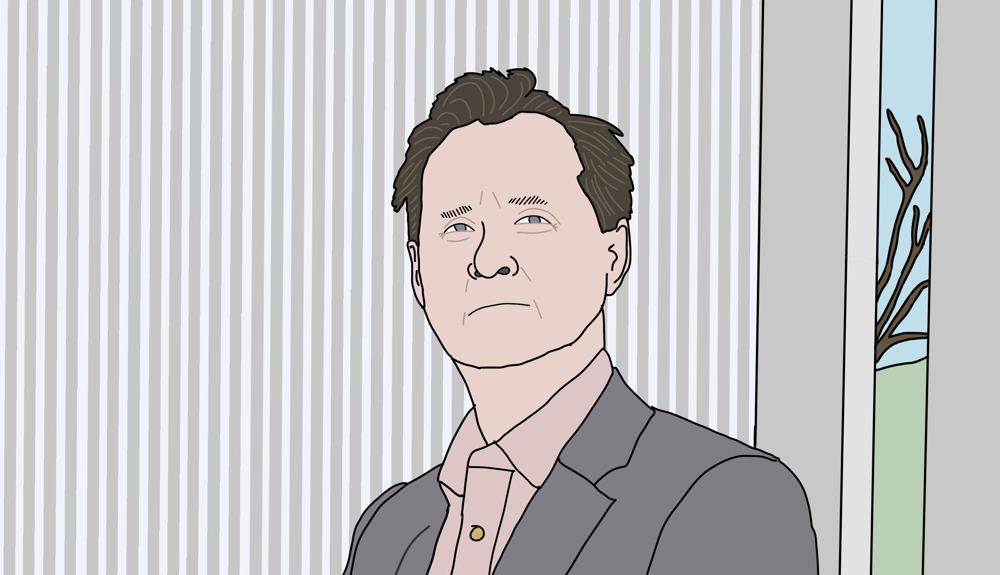
Hugh Herr
(lower leg amputation) was born in Pennsylvania and is a professor at the Massachusetts Institute of Technology Media Lab. He was an expert rock climber who had his legs amputated as a consequence of severe frostbite. He has spent his career developing advanced and robotic orthotic and prosthetic devices. He has launched several startup companies.
Joseph Hidler
(spinal cord injury) is an engineer who directed the Center for Applied Biomechanics and Rehabilitation Research at the National Rehabilitation Hospital. He has conducted research and published numerous papers on gait training and neural control of movement and motor learning. He is currently the CEO of Aretech, LLC, which makes devices for gait rehabilitation.
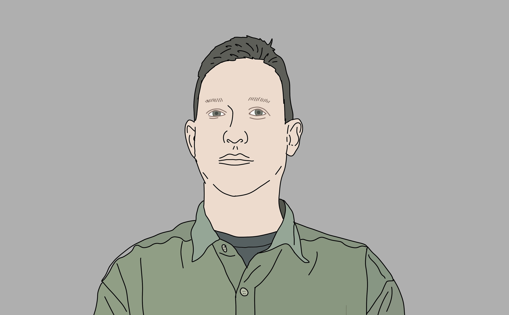
Jonathan Kuniholm
(forearm amputation) was born in North Carolina and is a biomedical engineer and the founder and president of StumpWorx, LLC. He had his right arm amputated due to wounds received while serving in the Marines in Iraq. His career has focused on making upper limb prosthetics more comfortable and useful for various uses, such as exercise, writing, and picking a guitar. He was appointed to the National Council on Disability
Jeff Minnebraker
(spinal cord injury) was a recreational therapist at Ranchos Los Amigos rehabilitation center in Downey, California. He was an avid athlete and pilot and used his aircraft and engineering skills to create the first commercially successful aluminum, rigid, lightweight wheelchair — the Quadra Wheelchair. His impact was a catalyst for the lightweight and ultra-lightweight wheelchair revolution. Virtually every manual wheelchair on the market for full-time use today is derived from his groundbreaking work.
Lawrence T. Pileggi
(paralysis) is originally from California and is currently Tanoto Professor and head of electrical and computer engineering at Carnegie Mellon University. His research includes numerous aspects of integrated circuitry design and methodologies and power systems simulation. He has started and sold several companies during his career.
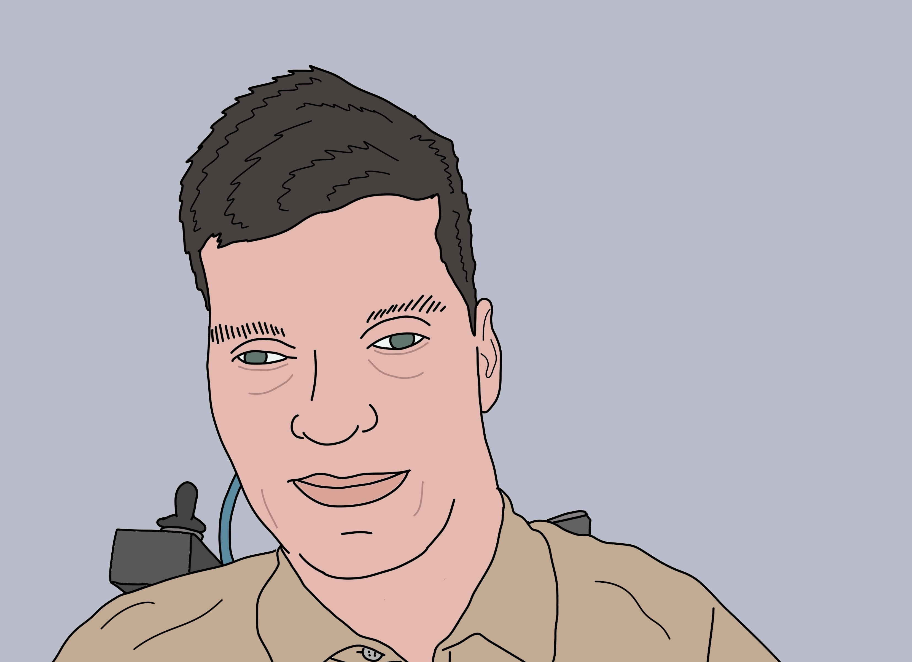
S. Andrea Sundaram
(low vision, spinal cord injury) was born in Michigan and has been visually impaired since childhood. He spent his early career working in research and development for a large consumer appliance manufacturer, where he invented several technologies used in home appliances. Following a spinal cord injury, he joined the Human Engineering Research Laboratories at the University of Pittsburgh to focus on developing assistive technology.
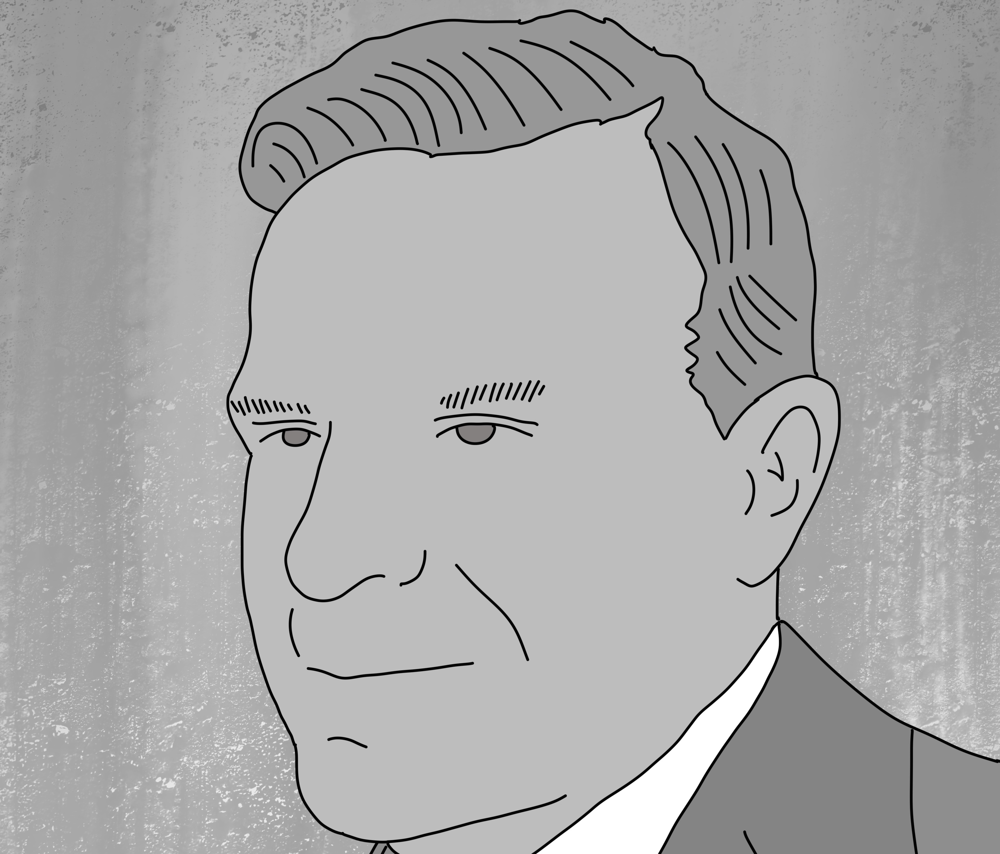
Ralph Teetor
(partial blindness) (1890-1982) was born in Indiana to a family with many manufacturing businesses. He later worked as an engineer for his family’s automotive business and developed cruise control reportedly because of his chauffeur’s erratic driving. Later generations of this technology are now used on virtually every vehicle and are what some have credited as paving the way for most autonomous vehicle features today.
Robert Weitbrecht
(hearing loss) (1920-1983) was an engineer and physicist at various laboratories throughout the United States. He worked on many projects, including the Manhattan Project. While some references credit James C. Marsters (who was also deaf) as the inventor of the teletypewriter, the patent lists Weitbrecht as the inventor. The teletypewriter has led to modern text messaging and instant messaging technology.
{kind=link}
{kind=link}
{kind=link}
{kind=link}
{kind=link}
{kind=link}
{kind=link}
{kind=link}
{kind=link}
{kind=link}
{kind=link}
{kind=link}
{kind=link}
{kind=link}
{kind=link}
{kind=link}
{kind=link}
{kind=link}
{kind=link}
{kind=link}
{kind=link}